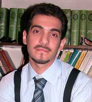

|
|
|
Browsing
Contact Us |
Campaigners |
Face to Face |
Tribune |
Interview |
News |
On the Web |
One Million |
Report
Farsi | Français | German | Italian | Spanish | العربية Also in this section
|
 Ronak, Hana and Yasser Struggle to abolish gender discrimination and ethnic oppressionMonday 11 February 2008 Kaveh Kermanshahi / Gooya Newsletter After spending three months in holding cells at the bureau of the intelligence services in Sanandaj, Ronak Safa zadeh, Hana Abdi, and Yasser Goli were transferred to the city’s central prison and their families were finally permitted to visit them. These visits further increased the families’ concerns about the condition and treatment of their children in custody. Yasser’s mother says, “when I saw my son, it reminded me of Sadam Hossein’s face when he was emerging from his hideout. Yasser’s tangled hair and thick beard show that he is being kept under terrible conditions, to the extent that he doesn’t get a chance to shave or comb his hair, and it’s possible he hasn’t been allowed to shower at all during this time. But in spite of all that my son was calm and composed like always; he hadn’t lost his self confidence" After three months, the lawyers of these three young individuals from Sanandaj, are still waiting for the completion of investigations by the intelligence services and the judiciary. Only after the investigations are complete will the lawyers be able to access the files, meet with their clients, and commence the legal procedures to represent the defendants. Meanwhile, certain official media and news agencies have given indications concerning the allegations made against Ronak, Hana, and Yasser, citing judicial and security officials as their sources. These allegations include having relations with armed opposition groups, groups which, according to the Iranian government, carry out terrorist attacks. It was further alleged that the defendants took part in recent bombings in the city of Sanandaj. No group (including the group that the defendants have been accused of working with) has claimed responsibility for the bombings; in fact, because of the extensive activities of Islamic extremist groups (also known as "Salafis") in the region, many believe that these groups are in fact responsible for the bombings [rather than the groups accused by the government]. But it seems that the officials have no interest in finding the truth or in finding the identity of those who ordered or carried out the attacks; they would rather avoid confronting these extremist Islamic groups in Kordestan, powerful groups that wield significant influence. Officials instead accuse helpless youth like Hana, Ronak and Yasser and label them terrorists, despite the fact that the history of their civic activities shows that their methods and outlook are peaceful. Their membership of legal organizations such as the Azarmehr Women’s Group and the Democratic Alliance of Kurdish Students, their participation in social movements like the women’s movement or the students’ movement, and their support of peaceful movements like the One Million Signatures Campaign for the Change of Discriminatory laws, testify to their innocence and demonstrate that the afore-mentioned accusations are baseless. Negin Sheikh-ol-eslami is the chair of the Azarmehr Women’s Group of which Ronak and Haana were among the most active members and of which Yasser’s mother is currently a member. Ms. Sheikh-ol-eslami is shocked at the accusations brought against her friends and asks/ Shirin Ebadi, lawyer and Nobel Peace Laureate, has volunteered to represent Ronak and Hana, but has been rejected by the revolutionary court in Sanandaj on the pretext that the investigations have not yet been completed. Ebadi has criticized the public announcement of accusations against Ronak and Hana. Accusations such as "activities against national security" and "relations with enemy groups" were published by government-backed media, citing judicial officials as their source. Ebadi says that “according to the law, until someone is tried and convicted, it is illegal to announce the charges against her publicly. Should this be the case, then the individual responsible for the announcement can be arrested on charges of slander. This is the law that we must all abide by, but unfortunately we sometimes see that the officials who are responsible for enforcing the laws do not themselves abide by it. They have announced accusations against Ronak and Hana while their case is still in the investigation phase and has not yet been sent to court; nor have they been convicted of any of the charges. I don’t believe that these two young women have endangered our national security. They have committed no crime except that of seeking gender equality.” (interview with the website of Change for Equality). Indeed, as Shirin Ebadi pointed out in another part of this interview, women’s movement activists are accused of and tried for acting against national security and causing commotion in the society. In this regard, she said: "Unfortunately we have for some time been observing that they ascribe every small and petty matter to national security." Anyone who has followed the news of the arrest, detention and conviction of the civil rights activists in Iran, even by just reading the headlines, knows that "acting against national security" is the common crime that most of the social movement activists and political activists are charged with by the government. On the other hand, those who know even a little about the social and political conditions in Kurdistan, are aware of the presence and activities of the Kurdish opposition parties in the area. Most of these parties have abandoned armed struggle and have embraced political activities instead. This presence has given the government the excuse to ascribe any form of civil activism in the area to these parties and to confront the Kurdish civil activists by labeling them as separatists, terrorists, spies, etc. The government uses this to justify the militarized atmosphere dominant in Kordestan and to falsely portray a violence-ridden image of the just struggles of the Kurdish people who in conjunction with the struggles of their compatriots in other parts of Iran want to achieve a society free of inequalities and gender discrimination, ethnic discrimination, etc. By doing so, the government hopes to disparage the cooperation that exists among social movements in different parts of the country. All the propaganda disseminated through the government megaphones and trumpets in recent weeks about the activities of Ronak, Hana and Yasser is nothing but the continuation of the same adversarial policies. Of course, this time there is also a focus on other goals. On the one hand, the government wants to portray these young people as violent and terrorist individuals so that they will lose the support of human rights activists and organizations. This in turn will obstruct the ever-increasing expansion of the One Million Signatures Campaign to Change Discriminatory Laws in Kurdish regions of the country, which, through the endeavors of the Kurdish activists has gained a rather favorable status among many people, particularly women in urban and even rural areas of Kurdistan. On the other hand, the government accuses the activists of falsification, opportunism and using the Campaign to advance their own political causes. This accusation is in stark contrast with any rationale or criteria. The Campaign has a very clear goal which is the demand to change the ten distinct cases of discriminatory laws against women. The Campaign plans to achieve this through gathering one million signatures in support of this demand and ultimately submitting the demand to the legislative body of the country, namely the Islamic Majles (Parliament). There is no doubt or uncertainty about the goals and plans of the Campaign. By promoting suspicion and mistrust among activists, the government is trying to cause divisions in the ranks of this robust movement which is going to change unjust laws to achieve equality by making the women of this land aware of their rights. Negin Sheikh-ol-Eslami also confirmed this matter by adding: "The arrest of Ronak and Hana, followed by accusations brought against them, has delivered a big blow to Azarmehr Women’s Society. These actions of the government were aimed to create the appearance that our organization jeopardizes national security. By creating such an illusion, the belief and trust of some families whose children were active in our organization, working towards distinct and defined goals, was diminished. This is because they notice that the government keeps saying that two of the members of Azar-Mehr Women’s Society are terrorists! The same process of creating this kind of illusion also applies to the activities of the Campaign in Kurdistan." The Secretary-General of the Azarmehr Women’s Society continued: "Unfortunately after publicizing these accusations and the media propaganda associated with them, it seems that human rights organizations and civil rights activists have also begun to believe that these young people are terrorists. This is indicated by the fact that no organizations or individuals, with the exception of a small group of our friends at the One Million Signatures Campaign, have shown any signs of support for Ronak, Hana and Yasser. We hope that this group will continue their support. It is quite evident that the people of Kordestan, especially Kurdish women, under unequal gender and ethnic imposition of unequal laws, suffer twofold. It is natural that those who strive for defending human rights and achieving a civil society cannot remain indifferent in relation to legal discriminations and violations of the human rights of fellow human beings. One of the best examples of these discriminations is the fact that the children of ethnic minorities in our country are deprived of the right to be educated in their mother tongue. Another part of the activities of Ronak, Hana and Yasser concerns their struggles to abolish ethnic oppression. Among these is the subject of mother tongue (Kurdish), about which Negin Sheikh-ol-Eslami will talk more in conclusion. She also talks about the nature of the activities of Ronak and Hana in this regard: "Speaking one’s mother tongue and being able to be educated in that language are among the most basic rights of any citizen. These rights have been delineated in the International Declaration of Human Rights. The right of the schools to teach their curriculum in non-Farsi languages and the right to teach non-Farsi languages, including Kurdish is also perspicuously stated in Article 15 of the Constitution of the Islamic Republic. We consider it to be our indisputable right to have the freedom to speak, read and write in our own language. It is our language that gives our people their ethnic identity. Reading and writing in our own language prevents our children from having low self-esteem and feeling inadequate. It is also very effective in developing our children’s character and increasing their self-confidence. Ronak and Hana, by being aware of these facts, have conducted classes in urban and rural areas to teach Kurdish to mothers academically so that they can pass it on to their children in a better and more wholesome manner. They believe that Kurdish women should give their children a decent education by increasing their awareness and empowering themselves. By doing so, Kurdish mothers can raise a new generation of Kurdish youth who, while preserving their culture and language, can have a positive and constructive role in the development of their homeland." Translated in collaboration P.S.* Unfortunately, at the same time this article was going into press, we found out that Mrs. Fatemeh Goftari (Yasser Goli’s mother), after going to Sanandaj Headquarters of the Security and Intelligence Agency to collect the personal belongings of her imprisoned son, was arrested on the orders of the prosecutor’s office of the 4th District of the Revolutionary Court and promptly sent to prison. Mrs. Goftari’s prosecution came as a result of her persistent efforts as a mother to seek the release of her son. |